For nearly three decades Charlie has built giant metal machines that burn — kinetic mythic effigies that only come alive when a crowd shows up to rock them. The art isn’t the object; it’s the royal we — the tribe that forms around the fire.
“Feed the fire with humanity & technology — we pulse, push n pull the energies, creating phenomena.”
Wood-fired sculpture at the “Heart of Burning Man” (with Syd Klinge). Where he met Brian Doherty.
Black Rock Arts Foundation grant; toured U.S. regional burns.
Six cities, six fire cauldrons, six months — each community kept its own. Shown in BM’s Fire Dream Circle.
The fertility-caldron set (Hot Mama, Mr. Nice Guy, the Waking Rooster); helped instigate the first AfrikaBurn.
22-ft rideable clown fire-cauldron with eight seats. Still touring (Hulaween 2023).
Seven-pointed interactive star, built by 100+. Later a 24-ft Atlanta BeltLine landmark.
Metal elephant-deity effigy (Okeechobee).
“The Waking Bird Dog” — a jackal-headed rooster teeter-totter that burns wood. Burning Man honorarium.
A tuned mechanical land-art “time-keeper” (Knoxville TN) — homage to ancient observatories.
A community-built memorial to Brian Doherty — an open book with a heart that beats fire. One-time burn.
A working visual archive — full metadata in Catalog/images.csv.
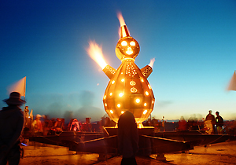
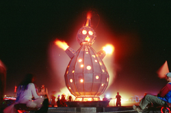
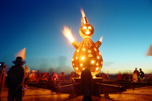
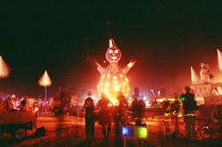
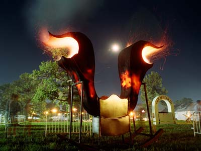
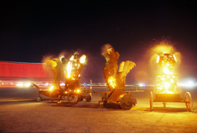
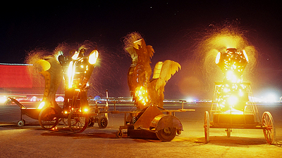
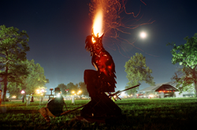
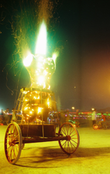
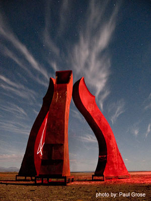
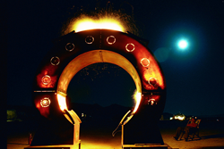
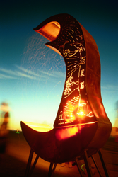
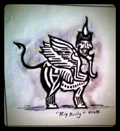
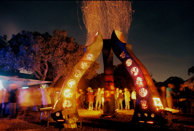
Open this file from inside the “Uncle Charlie” folder so the images resolve. Hero shots + full-res Okeechobee sets to be added per Catalog/image-wanted-list.md.